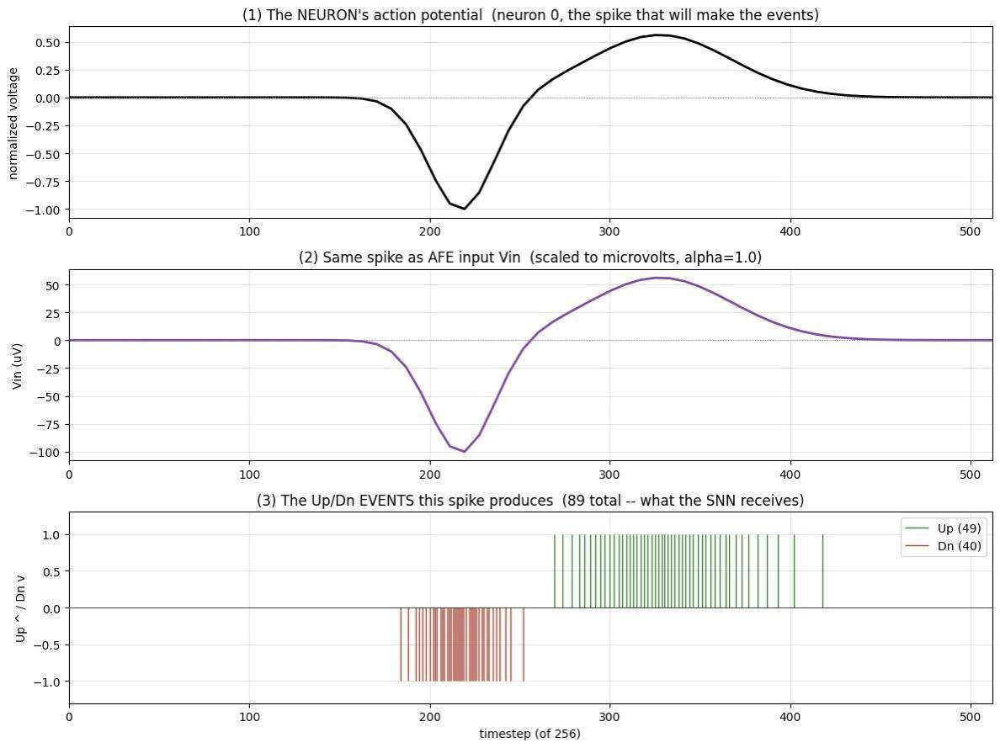
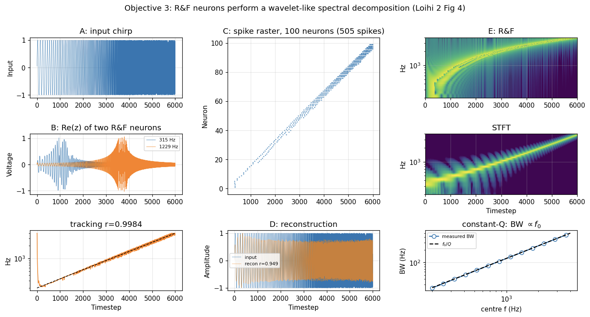
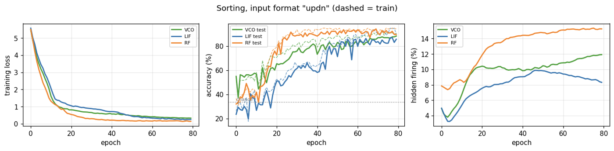

On-chip feature extraction for neuromorphic brain–computer interfaces
If the analog front end already emits events, the feature extractor can be a handful of spiking neurons instead of a filter bank — which is a very different power budget for the same decoding accuracy.
The front end as an analog-to-event encoder
An event-driven Gm-C front end turns a continuous neural signal into a stream of UP/DN events whenever the input crosses a level. There is no clock and no ADC in the usual sense: the information is in the timing of the events. I built a behavioral model of this front end, plus a Python/PyTorch framework around it with synthetic neural data, electrode aging, and spike overlap, so candidate decoders could be compared on the same event streams.

Which spiking neuron?
I compared VCO-derived, leaky integrate-and-fire (LIF), and resonate-and-fire (R&F) neurons on these event streams, separating candidates by sub-threshold amplitude and phase response as well as by downstream accuracy. All of the models are small — 258 to 549 parameters.
The implementation detail that mattered most was discretization. Forward-Euler implementations of R&F have a frequency-dependent divergence boundary that limits which bands you can use in fixed point. Impulse-invariant discretization removes that boundary, which keeps R&F stable across the full spike band in fixed-point hardware and opens up the whole band rather than a safe slice of it.

Decoding results
On a matched-dimensionality comparison (24 channels, 128 trials, 124 s), the R&F bank leads the conventional features it was matched against, and is the most consistent across sessions.
| Feature extractor | R² (nested ridge, trial level) |
|---|---|
| R&F bank | 0.690 — lowest spread across sessions (sd 0.068) |
| db4 wavelet | 0.645 |
| 6-band spike-band power | 0.645 |
| Spike-band power (SBP) | 0.624 |
| LIF bank | 0.560 |

Robustness to electrode aging
Separately, I compared seven spike-sorting decoders across clean and electrode-degraded conditions. The one decoder that uses iterative test-time inference actually improved under simulated aging (ARI 0.56 → 0.64), which suggests that letting the decoder re-settle at inference time is worth its cost on an implant that has to work for years.

Toward hardware
I designed asynchronous counters that compute the feature directly from the event stream, with no multiply-accumulate datapath at all. Current work is fixed-point RTL of the VCO channel and its UP/DN phase-wrap events, with 30 ms binning to give an SBP-like feature, for FPGA validation as a precursor to silicon.